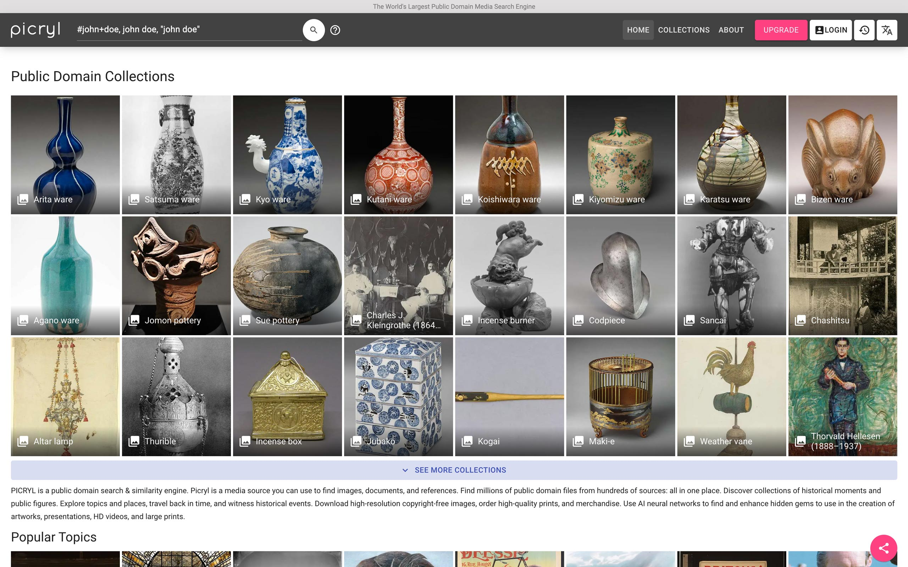
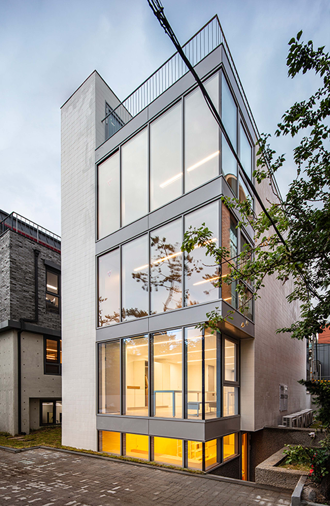
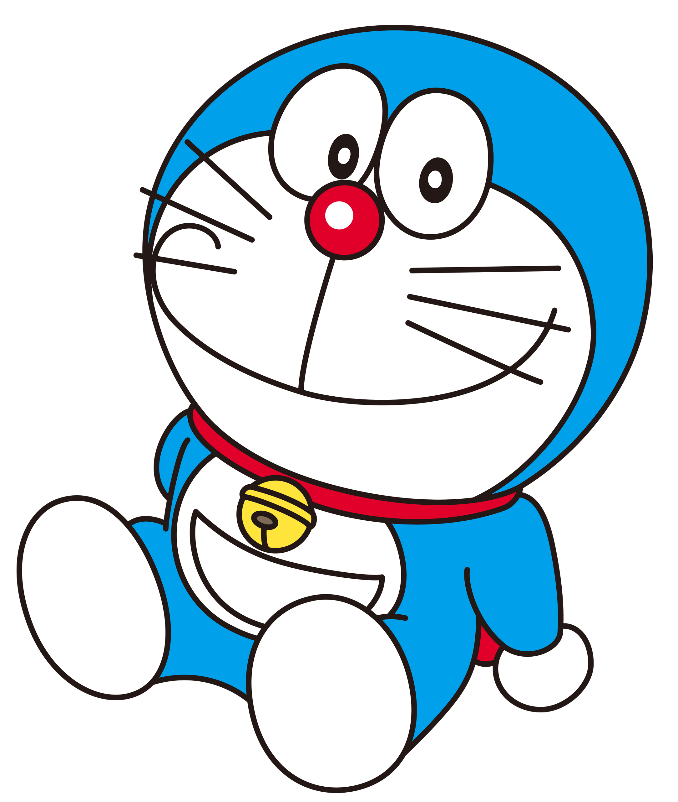

전시 보러 갈래? - 김형진과 함께 2
<5. 도파민 중독자, 김형진
6. 직업 활동에 따른 책임
7. 예쁜 것을 같이 예뻐하는 사이
8. 까마귀 혹은 도라에몽, 김형진
.
.
.
.
.
.
.
.
.
.
.
.
.
.
.
.
.
.
.
.
.
.
.
.
.
.
.
.
.
.
5. 도파민 중독자, 김형진
김형진: 대신 제가 열심히 하는 건 딱 하나 있어요. 보는 일. 저는 보는 일을 심각하게 많이 하는 사람이거든요? 한때는 제가 TV 중독이었는데, 그때는 없는 시간을 쪼개고 잠을 줄여서까지 TV를 봤어요. 근데 이게 무슨 목적이 있어서가 아니고 그냥 제가 시각적인 자극이 주입이 되어야만 하는 사람이라서 그랬어요.
무언가를 보거나, 보면서 비웃거나 감탄할 때 너무 즐겁잖아요. 예전에 포토그래퍼 강경희 씨가 저한테 도파민 중독이라고 말했던 기억이 떠오르네요. (웃음) 그 말처럼 미술 작품도 그렇고, 드라마랑 영화도 그렇고, 어디 공간에 갔을 때 그 공간 인테리어 작업도 그렇고, 계속 보고 평가질하는 제 생활이에요.
도현: 거기에서 오는 피로감은 없나요?
김형진: 피로감은 자고 일어나면 해소되는 거니까.
재훈: 전에 ‘Archives Seoul’에서 하셨던 인터뷰1가 떠오르네요. 거기에서 틈만 나시면 여러 아카이브 사이트를 돌아다니면서 고해상도 이미지를 찾아보신다고 말씀하셨는데 그것도 같은 맥락인 건가요?
김형진: 제가 제일 좋아하는 일과 중 하나에요. 미국에서 만들어진 아카이브들은 너무너무 아름답고, 엄청나게 고해상도의 서비스를 해주잖아요. 그 해상도가 주는 압도감이 있어요. 정말 하찮은 이미지를 막 100MB로 들여다보고 있으면 시간 가는 줄 모르죠.
재훈: 보시는 플랫폼이 어떻게 되세요?
김형진: 제가 제일 열심히 보는 건 picryl.com이에요. 피크릴 닷컴은 이를테면 아카이브의 중앙 서버 같은 역할을 하는 곳이라서 여러 가지 아카이브 사이트에 있는 자료들을 찾아주죠. 거기서 어떤 이미지를 찾았는데 그게 어디에 소장되어 있다는 정보를 알게 되면 그 사이트를 타고 들어가서 그쪽을 디깅하는 편이에요.

도현: 그렇게 여러 가지 시각물을 살펴보시면 본 것들을 처리하는 시스템이나 방식도 있으신가요? 예를 들어 스크랩을 한다든가.
김형진: 스크랩이나 체계적인 정리 없이 보기만 해요. 그냥 기억하고 있다가 디자인에 써먹죠. 어디서 20년대 커피 패키지 이미지를 봤었는데… 그런 식으로요. 제가 하는 많은 디자인들이 제가 직접 만드는 것이라기보다는 그 기억을 불러와서 배치하는 것에 가깝거든요. 그렇게 써먹고 끝내는 편이에요.
재훈: 솔직히 말하자면 저는 아까 디자이너님이 참다운 직업인이라는 걸 확인하고 나서, 무언가를 더 캐내고자 하는 전의를 상실한 상태예요. (웃음) 그는 그저 성실한 사람이었다.
김형진: 창작을 하는 사람인 줄 알았는데 알고 보니 직업인이었다. (웃음)
정아: 전 그래서 오히려 재미있어요.
재훈: 제 머릿속에 김형진 디자이너님의 상이 왜 그렇게 맺혔냐면 아까도 말씀하셨다시피 인정하시는 사람의 수가 많지 않잖아요. 그만큼 본인이 생각하는 ‘좋음’의 기준이 명확한 거고요. 저는 그렇게 기준이나 가치관이 명확한 사람들은 사명감까지는 아니더라도 더 큰 뜻이 있을 거라 상상했던 것 같아요. 그 둘을 분리할 수 있다는 걸 지금 실례로 접하면서 깨닫고 있고요.
김형진: 무언가를 할 때는 당연히 뜻을 가지고 하죠. 다만 뜻이 무언가를 시작하게 되는 동기가 되진 않아요. ‘좋음'에 대한 기준이 명확한 것은 그냥 많이 보기 때문이에요. 많이 보다 보면 좋은 것과 나쁜 것을 자연스럽게 구별하게 되니까요. 이 두 가지를 혼합해 말하자면 ‘감각적으로는 별로인데 의미 있다고 해서 좋은 건 아니다’라고 생각하는 편이죠.
재훈: 예시가 있을까요?
김형진: 반대편으로 들 수 있는 예시는 떠오르네요. ‘레니 리펜슈탈’이라고 나치 시대 선동 영화를 만들었던 여성 감독 있잖아요. 그 사람의 작업이 형식주의적으로는 어마어마하게 뛰어난데 작업의 내용은 히틀러와 파시즘을 옹호하는 것이거든요. 이런 경우처럼 예술적인 성취는 인정할 수 있지만 그 작품을 통해서 하는 말에 대해서는 동의할 수 없는 건 있죠.
그리고 제가 자주 들어가는 미국 아카이브 웹사이트 중에서는 미국의 정부기관에서 만들어낸 아카이브들이 엄청 많단 말이에요. 그중 어떤 것들은 찬양하거나 통제하기 위해 만들어진 것인데요. ‘그런 가치에 동의하거나 행위에 동참할 것이냐?’라고 묻는다면 그건 아니지만 그 아카이브가 시각적인 결과물로서 아름답다는 점은 부인할 수 없죠.
저는 어떤 사람이 보여주는 형식적인 태도는 믿을 수 있지만 내용은 잘 안 믿는 편이에요. 내용은 꾸며낼 수 있지만 형식은 그만큼 꾸미기 위해서는 오랜 시간의 노력이 필요하기 때문에 그만큼 쉽진 않거든요.
도현: 그게 저도 어느 정도 맞다고 생각해요. 상관없는 것 같다.
6. 직업 활동에 따른 책임
김형진: 혹시 ‘저렇게 아무 생각도 없이 작업할 수 있나?’라는 생각이 드시나요? 재훈 씨 너무 괴로워하시는데? (웃음)
재훈: 네, 근데 제가 좋아하는 문화예술계 종사자 중에서 디자이너님 같은 사람이 많아요. 지금의 현실은 모두에게 동일하게 주어진 조건이니까 이것에 대해서 호들갑 떨거나 대단한 뜻을 내세우지 않으며 나의 일을 할 것이라는 태도. 그런 태도를 가진 분들을 성실한 직업인으로 불러볼 수 있을 것 같네요...
김형진: 근데 경계해야 할 부분도 있어요. 직업적인 윤리를 따른다고 해서 그 결과가 반드시 선이 아닐 수도 있으니까. 이를테면 어떤 사람이 스스로 선택한 직업윤리에 따라 일을 하다가 결과적으로 악이 행해진 경우. 그 사람한테 책임을 물었을 때 ‘나는 이러이러한 상황에 맞춰 나의 할 일을 했을 뿐이다’라는 식으로 답변하는 경우도 있죠. 사실 그 답변은 되게 무책임한 거예요. 결과적으로 악이 행해졌으면 잘못했다고 말하고 자신의 선택에 대한 책임을 져야죠.
정확한 답변을 해야 할 때 그저 직업적인 윤리를 다 했을 뿐이라고 변명하거나 그런 복잡한 얘기는 모르겠다고 말하는 선택은 비겁한 거죠. 결국은 다른 사람들과 연관된 맥락 속에서 작업을 하는 것이기 때문에 그런 식으로 면피 될 수 있는 건 아니거든요. 앞서 이야기했던 ‘아무 생각 없이 일한다'는 제가 데스크에 앉아서 작업을 할 때의 태도를 말하는 거예요.
재훈: 이야기를 듣다 보니 여쭤보고 싶은 게 떠올랐는데요. 이번에 디자이너님에 대한 리서치의 일환으로 워크룸 홈페이지를 쭉 훑어봤거든요. 그러면서 2010년대에 미술 현장에 대해서 관심 두게 되다가 도미노2 총서와 도미노 편집 동인이 만들었던 잡지 <도미노>도 알게 되었는데요. 그게 함영준 씨가 2016년에 성폭력으로 고발당해서
김형진: 모든 활동이 끝났죠.
재훈: 네, 그 사건이 있다는 걸 알고는 있었는데 이번에 더 찾아보게 됐어요. 함영준 씨의 1, 2, 3차 사과문이랑 최성민 디자이너 입장문, 김형재 디자이너 입장문 등을 쭉 봤어요. 그걸 보면서 내가 여기에 어떤 감정을 가져야 할지 모르겠더라고요. 워크룸도 그 이후로 도미노 총서를 중단했잖아요.
김형진: 네, 끝냈죠.
재훈: 그런 일이 생겼을 때는 어떠셨어요?
김형진: 슬펐죠. 당연히 슬펐는데, 이 슬픔은 복합적인 감정이에요. 분명히 그사이에 오해도 있었을 것이고 밝혀지지 않은 것도 있었을 테지만 사건이 그런 식으로 현상화되었다면 그에 대한 책임은 당연히 져야죠. 그게 무슨 독립운동도 아니니까 그것이 좌절되었다고 해서 허망함에 빠져 좌절할 일도 아니라 생각하고요.
그때 저는 솔직히 말씀드리면, 강 건너 불 보듯 하는 심정이었어요. 내 집이기도 했던 그 성과가 불에 타서 폭삭 망하고 있는데 이미 나는 강 건너서 다른 쪽 강변에 와있었거든요. 강 건너에 있는 내 집이 불타는 걸 보면서.
저는 어느 세대가 다른 세대에 비해 특별하다고 생각하지도 않고 어느 그룹의 움직임이 특권적인 위치를 차지하고 있다고도 생각하지 않아요. 그냥 열심히 하는 많은 그룹 중에서 당시의 맥락을 조금 더 잘 읽어낸 어떤 행동들이 불뚝불뚝 튀어나와서 사람들 눈에 띄었을 뿐인 거죠. 그래서 그냥 ‘또 다른 데 가서 또 다른 거 하면 되지’라는 생각이었고 ‘그래도 우리가 이 점 하나는 배워 갔기 때문에 다음에 또 이런 어리석음을 범하지 않게 됐으니 얼마나 다행이야.’라고 하는 게 제 솔직한 입장이었어요.
그러던 와중에 '그래픽 디자인업계 종사자들께 묻습니다'3라는 제목의 공동 성명서가 나왔고, 거기에 저하고 최성민 선생님이 언급됐었거든요. 그래서 답장으로 ‘<그래픽 디자인 업계 종사자들께 묻습니다>에 답합니다’4라는 입장문을 쓴 거예요. 그때까지 제가 생각하지 못한 문제들에 대해 생각하게 된 기회라서 감사함을 표하고, 제 무지를 인정하는 글을 썼죠.
사실 이 일이 일어났던 시기가 《그래픽 디자인, 2005~2015, 서울》 전시 말미였단 말이에요. 그래서 전시장 한쪽에 그 사건에 대한 성명문이 붙고 그랬어요. 제가 그 전시 준비할 때 ‘이런 전시를 하면 그 움직임은 꼭 관으로 들어가던데..’라는 얘기를 농담처럼 했었는데 ‘실제로 이런 식으로 관으로 들어가네?’ 싶었죠. ‘뭐, 그래도 소리 소식 없이 늙어서 뒷방 늙은이 되는 것보다는 이렇게 누군가의 단죄의 대상이 돼서 사라지는 게 낫지 않아?’라고 생각했어요. 그렇게 하면 어쨌든 다른 사람들의 불쏘시개는 되는 거니까요. 누군가의 불쏘시개가 되는 것은 좋은 일이죠.
‘어차피 내일 출근해서 또 일해야 되는데’라는 생각과 ‘내일부터 일할 때는 이런 부분을 조금 더 신경 써야겠구나’ 정도의 생각을 했을 뿐이지, 비장한 마음은 하나도 없었어요. 그 뒤로도 가능하면 그에 대해서 아무것도 안 하려고 했어요. 어떻게 해도 또다시 마이크를 쥐려는 행위로밖에 안 보일 것 같았어요.
재훈: 마이크를 쥔다.
김형진: 마이크는 너무 중요한 거라서, 마이크 쟁탈전이 벌어지지 않았다는 것만으로 저는 다행이라고 생각해요. 마이크를 되게 평화로운 과정으로 넘겨졌죠. 결국 어떤 방식으로는 더 좋아졌잖아요. 예를 들어 몇 년 전만 해도 디자인 잡지나 SNS에서 주로 거론되던 신진 디자이너들에는 (남녀 성비로 따지면) 남성이 훨씬 많았어요. 근데 지금은, 요즘 새롭게 떠오르는 젊은 디자이너들을 생각할 때 여성이 훨씬 많거든요. 실제로 디자인 전공자 중 여성이 훨씬 많으니까 그 비율대로 가고 있는 거죠. 정상화된 거예요.
7. 예쁜 것을 같이 예뻐하는 사이
재훈: 디자이너님은 평소에 중요한 사람이 되고 싶다는 생각을 하지 않으시나요?
김형진: 저는 저희 사무실 안에서 중요해요, 이미. (웃음) ‘중요한 사람이 되겠다’라고 하기에는 중요한 사람이 되기 위한 활동들이 재밌지 않아요. 사람 만나야 하고, 중요하지만 재미는 없는 회의처럼 즐겁지 않은 자리에도 참여해야 하고 그렇잖아요. 저 그거 못해요. 그냥 작업하거나 남들이 만든 재밌는 거 보는 시간이 훨씬 재밌어요. 만나면 맨날 똑같은 소리 하는 사람들하고 앉아서 공감대 확인하는 거 너무 시간 아까워서 못 해요.
그리고 디자인계에서 중요해 봤자 뭐 하겠어요? 디자인계에서 쥘 수 있는 권력이라고 해봤자 쥐꼬리에요. 물론 디자인계에서 중요한 사람이 되는 게 엄청난 혜택이었다면 제가 욕심을 내보였을 수도 있죠. 근데 그 권력이라고 하는 게 어차피 너무 우스운 거라서... 뭐 어디 센터장 되고 하는 그런 건데, 그거 해서 뭐 하겠어요?
그리고 <GRAPHIC #48 워크룸 15년(2006-2021)>의 서문에 쓰인 ‘우리는 그동안 우리가 일하며 알게 된 동료와 친구들을 자랑스럽게 여겨 왔다. 우리가 작업하는 이유와 보람은 사실 그들에게 자랑하기 위해서였다.’라는 말 있잖아요. 그게 제가 2008년에 어디 잡지랑 인터뷰하다가 “작업은 왜 하세요?”라는 질문에 대해 답했던 내용이거든요. 박활성 편집자가 그 말을 기억해서 가져다가 쓴 건데, 그 마음은 지금도 똑같아요. 저는 제가 인정하는 사람들한테만 인정받고 싶어요.
솔직히 말하자면 그 사람들한테 보여주려고 작업하는 거고, 제가 모르는 사람들한테는 아무 관심 없어요. 근데 제가 인정하는 사람들은 그냥 저랑 같이 작업하는 동료들이거나, 친하지는 않지만 친분이 있는 생산자들 정도에요. 그 사람들한테 ‘나 이번에 이런 거 했는데 이쁘죠?’라고 보여주려고 작업해요. 어떻게 보면 너무 초등학생 같은 마음인데, 솔직히 그 마음밖에 없어요. 하루에 12시간 동안 작업하는 것도 그 사람들한테 자랑하려 하는 거고요.
재훈: 책이 완성되면 실제로 자랑하러 가시나요?
김형진: 예전에는 이메일 보내거나, 작업물을 보내기도 했는데 요즘에는 인스타그램에 올리면 좋아요가 눌리잖아요? 그중에 그 사람들이 있는지를 보죠.
도현, 정아, 재훈: 아~
김형진: 인스타그램 좋아요가 중요하다기보다는 제가 좋아하는 사람들이 제 작업을 인정하는 게 중요해요. 근데 그것만큼 중요한 게 있나요? ‘내가 모르는 사람들이 내 작업을 보고 어떤 반응을 보일까?’는 그 사람들이 저한테 중요한 사람이 되기 전까지는 하나도 중요하지 않아요.
어제 봤던 재밌거나 예쁜 것을 동료들에게 보여주려고 밤잠도 줄이면서 찾고 보고 그래요.
도현: 동료 분들이 동의하지 않을 때도 있나요? (웃음)
김형진: 동의하지 않으면 되게 슬퍼지고 시무룩해져요.
정아: 오늘은 어떤 걸 공유하셨나요?
김형진: 며칠 전 유현선 디자이너가 ‘풋 디스 온’이라고 하는 사이트에 올라와 있는 패션 일러스트레이션을 보여줬는데 그게 너무 좋았어요. 그걸 들고 편집부로 올라가서 이거 너무 좋으니까 우리 책 내자고 설득했죠. 저작권 이슈만 해결되면 준비해서 낼 것 같아요.
재훈: 정말 단순하시네요.
김형진: 예쁘면 예쁘고 안 예쁘면 안 예쁜 거죠. 그런 면에서 세상은 단순해요.
재훈: 명료하네요.
김형진: 세상에 중요한 게 많다는 건 당연하잖아요. 근데 그것 모두를 내가 진지하게 생각한다면 아무 일도 못 할 것 같지 않아요? 그러니까 그냥 단순해질 수밖에 없는 것 같아요. 내가 지금 오늘 생각했을 때 가장 좋은 거, 가장 예쁜 거에 집중할 수밖에 없는 것 아닌가 싶어요. 저도 어느 시기에는 풍선처럼 부풀어진 말들에 혹할 때가 있었거든요? 근데 점점점 플랫해지는 것 같아요.
재훈: 나이가 들면 자연스럽게 그렇게 되는 건가요?
김형진: 나이 때문인가요? 그럴 수도 있는데, 아무튼 의미나 가치를 먼저 앞에 두지 않으려는 태도가 점점 강해지는 것 같긴 해요. 예컨데, 디자인 시안에 대해 많이 받는 피드백 중 하나가 ‘우리의 작업물은 디자이너님이 그래픽으로 표현해 주신 것보다 훨씬 더 깊이가 있다. 혹은 더 진지하다.’ 이런 식의 말들이거든요. 근데 저는 깊이에 관심 있는 사람이 아니란 말이에요. 앞서 말한 것처럼 디자인이라는 건 굉장히 비효율적인 언어라서 아주 단순하고 명료하게 말해야 겨우 전달된다고 생각하기 때문에요.
내가 어떤 것을 생각하고 있다면 그걸 명확하게 표현하고 전달하는 일이 무척 중요해요. 그런데 이때 주의해야 할 게 스스로 ‘이건 되게 복잡한 이야기야’라고 여기는 순간 다른 사람에게 전달이 안 된다는 점이죠. 가장 사랑하는 사람도 매일매일 오해하는데 생전 처음 보는 사람의 이야기를 어떻게 이해하겠어요? 절대로 전달될 수 없을 것이라 가정하고, 매우 단순하고 명쾌하게 이야기를 해야 되는데, 너무 많은 작업자가 자신의 복합적인 작품 세계를 온전히 설명하려고 노력해요. 한 작업 안에 가능한 한 꽉꽉 눌러 표현하고자 하고, 복잡다단한 스테이트먼트를 쓰고 싶어 하죠.
도현: ‘우리의 작업물은 디자이너님이 그래픽으로 표현해 주신 것보다 훨씬 더 깊이가 있다.’는 식의 피드백을 받으면 어떻게 하세요?
김형진: 일차적으로는 설득하려고 노력해요. 그러니까 ‘포스터가 작품 설명서는 아니다. 포스터의 기능은 사용자를 잠깐 멈춰 세우고 클릭을 유도해 본 페이지로 들어가게끔 하는 삐끼 같은 것이라 그 역할만 하면 된다. 포스터에서 작품의 진면목을 다 드러내려고 하신다면 다른 디자이너라면 할 수 있을지 모르겠지만 저는 못한다.’라고 얘기를 하죠. 이게 책 표지에서도 흔히 발생하는 문제에요.
책의 표지를 결정할 때, 필자들이 표지에 책의 전체를 다 담으려고 엄청나게 푸시하거든요. ‘제 책은 지금 이 표지처럼 단순한 책이 아니에요.’라는 말을 하죠. 하지만 표지에 그 책의 모든 것을 담는다면 표지라는 게 있을 필요가 없지 않나요? 매일매일 설득하고 어떤 경우는 성공하지만 3, 40%는 실패하죠.
재훈: 아까 건축가들의 스테이트먼트를 이야기하시면서 그들이 스테이트먼트를 통해 만들어내고자 하는 인문학적 분위기와 그 분위기를 통해서 실현하고자 하는 욕망을 언급하셨잖아요. 그 욕망이 뭐라고 생각하세요?
김형진: 그 욕망에는 두 가지 방향이 있다고 생각하는데요. 하나는 본인이 이 정도로 인문학적, 철학적 깊이가 있는 사람이라는 걸 과시하고 싶은 마음이고요. 또 하나는 ‘이 건축물은 이러이러한 물리적인 법칙에 의해서 콘크리트와 철근으로 만들어진 덩어리이지만 아름답지 않으냐?’라고 말할 용기가 없는 거예요. 거기에 의미를 더해야만 사람들이 안심한다고 생각하는 거죠.
도현: 제가 디자인 학부를 한 6년 정도 다녔는데요. 이렇게 얘기하는 사람을 처음 봤어요. 저도 완전히 다른 영역의 일을 하는 사람은 아니다 보니 선배를 바라보는 입장으로 오늘의 이야기를 쭉 들었는데요. 디자이너님이 본인의 작업에 관해서 설명하고 얘기할 때 취하시는 방식이 참 좋다고 여겨져요.
김형진: 감사해요.
도현: 딱 그랬어요. 재훈이 ‘전시 보러 갈래?’를 같이 하자고 얘기하면서 김형진 디자이너님을 어떻게 생각하느냐고 물었고, ‘나는 이런저런 지점 때문에 이런 방향으로 좋게 보고, 또 작업을 계속 찾아보게 되는 것 같다’고 했는데 오늘은 그걸 확인하는 과정이었던 것 같아요.
김형진: 저도 재밌었어요.
재훈: 디자이너님처럼 이렇게 더 높은 자리에 가고 싶다는 마음 없이 단순함을 유지하는 게 정말 쉬운 일이 아니라고 생각해요. 지금 이 신자유주의 사회에서는 집 밖에만 나가도 수많은 광고 이미지가 나의 부족함을 지적하고, 인스타그램에는 경제적으로 성공해서 생활의 중력 따위는 느끼지 않는 고급 인간들의 라이프스타일이 가득하잖아요. 젊은이로서 그러한 시각 환경 안에 있다 보면 그 성공의 유혹, 잘 팔리는 개인이 되고 싶다는 욕망을 안 가질 수가 없는데... 이렇게 단순함을 유지하는 사람을 보고 있자니 참 많은 생각이 드네요.
김형진: 제가 워크룸의 동료 디자이너분들한테 잔소리하는 게 몇 개 있는데, 그중 하나가 이거예요. 작업을 할 때는 내가 지금 만들고 있는 게 너무너무 아름답고 최고라고 여기며 집중해서 해야 하거든요. 그렇지만 작업이 끝나고 파일을 넘기는 순간 ‘뭐, 이거 아무것도 아닌데?’라고 생각할 수 있었으면 좋겠다고. 그 이유는 단순히 ‘다음 작업을 해야 하니까’에요.
내가 만든 작업물 중에 너무 잘 된 작업이 있을 수 있잖아요. 그런데 그건 어제까지 한 것이고, 오늘 그리고 내일 또 해야 하는 작업들이 있죠. 그런데 어제 만들었던 게 너무나 자랑스럽고 기쁘다면 다른 작업들도 또 그와 비슷하게 하려고 할 거 아니에요. 어떤 걸작을 만들어냈을 때 오는 희열이라는 것은 자주 찾아올 리도 없고요. 그 희열의 맛에 너무 도취해 있으면 비슷한 감정이 다시 찾아오지 않았을 때 좌절하고 실망하게 되잖아요.
그래서 작업할 때는 굉장히 열중해서 하지만 작업이 끝나는 순간 그냥 아무것도 아니라고 생각할 수 있으면 좋겠어요. 그래야지 계속할 수 있으니까. 계속 다른 방식으로.
정아: 명료하다.
재훈: 저는 기대도 많고 또 실망도 많이 하기 때문에 한 번 실망하면 낙담해서 다음 거 할 힘이 없거든요.
김형진: 그렇죠. 기대하게 되면.
도현: 저도 실망하기 싫어서 기대 안 하는 것 같아요. 그렇게 생각하다 보니까 그냥 앞에 있는 걸 하자고 마음먹게 돼요.
정아: 저도 너무 공감돼요. 미래에 대한 기대 없이 하루하루 해야 할 일을 하는 게 진짜 오래 하는 방법인 것 같다고 최근에 느끼고 있어요.
김형진: 오래 하는 게 목적이면 그게 가장 좋은 방법이고, 중요한 사람이 되고 싶으면 조금 곤란하고.
정아: 중요한 사람 (웃음)
김형진: 누구든지 어떤 방식으로든 중요한 사람이 되고 싶어 하죠. 그러니까 모두에게 중요한 사람이 되고 싶냐, 아니면 다른 방식의 중요한 사람이 되고 싶냐의 차이가 있을 뿐인 것 같아요.
정아: 중요한 사람이라고 하는 분들이 저를 너무 많이 실망시켜서 중요한 사람이 되고 싶은 마음이 사라진 것 같아요. 원래는 좀 있었는데. 그런 삶의 방식이 제가 원하는 삶의 방식은 아닌 것 같아서 요즘은 그냥 하루하루 해야 할 일을 하는 사람이 되려고 해요.
김형진: 그리고 하루하루 할 일을 하는 세팅을 유지하는 데 생각보다 굉장히 많은 공이 들어요.
정아: 맞아요, 진짜.
도현: 이번에 워크룸 인터뷰를 보면서 야근을 왜 하면 안 되는지 알게 됐어요. 그전에는 ‘내가 좋아하는 일 하는 건데 좀 늦게까지 일할 수 있는 거 아닌가?’ 생각했거든요.
김형진: 저희는 주 4일 근무를 하는데요. 야근을 하지 않는다거나 주 5일에서 주 4일로 변경한 이유도 그냥 ‘계속해야 하니까’였어요. 작년이 저희가 풀 타임으로 4일 근무를 시작한 첫해였는데 매출은 작년이 제일 좋았어요.
도현: 모두가 부러워하는.. 앞으로 더 줄일 생각 있으세요?
김형진: 더 줄이면 좀 재미가 없을 것 같아요. 저는 주 4일 근무하고 목요일에 퇴근할 때 아쉽거든요. 내일도 만나서 재밌는 얘기 하고, 예쁜 거 서로 보여주고, 동료로서 작업하고 그러고 싶은데 딱 월화수목만 근무하고 헤어져야 하니까 좀 아쉬워요.
재훈: 다른 분들은 생각이 다를 수도 있겠네요. (모두 웃음)
김형진: 그렇죠. 근데 월화수로 줄이면 제가 너무 심심해서 안 될 것 같아요.
8. 까마귀 혹은 도라에몽, 김형진
재훈: 워크룸 식구들이 아니더라도 더북소사이어티나 양장점, 슬기와 민 같은 동종 업계 동료분들과 한 건물 사용하시잖아요. 그럼 서로 자주 만나시지 않나요?

©진효숙
김형진: 아니요, 거의 안 만나요. 각자 일만 해요.
도현: 그것도 개인적으로 궁금했었어요. 어쩌다 건물을 짓게 되신 건지.
김형진: 제가 무계획적이고 산만해서 이상한 일을 정말 많이 벌려요. 그중에 고꾸라지거나 실패한 일도 되게 많고요. 저랑 같이 워크룸을 만든 박활성 씨에게 ‘야, 우리 건물을 지어보자!’고 말한 뒤 1년 동안 들들 볶아서 건물 짓기 프로젝트를 시작한 거예요. 양장점과 더북소사이티를 불러 들인 이유는 제가 자랑하고 싶어 하는 친구들이 가까이 있는 게 좋으니까? 그렇게 해서 그렇게 된 거예요.
재훈: 층만 왔다 갔다 하면 자랑을 쉽게 할 수 있겠네요.
김형진: 맞아요. 지금은 많이 없어졌지만 예전에는 서촌에 디자인 스튜디오가 많았어요. 그때는 신간이나 새 작업이 나오면 동료들에게 돌리려고 동네를 한 바퀴 돌았어요. ‘저희 신간 나왔어요~’라고 전해주면 ‘우와, 예쁘다~’라고 반응하잖아요. 그 칭찬을 듣기 위해 동네 한 바퀴를 쭉 돌았죠. (웃음) 이제 좀 더 간편해졌어요.
도현: 지어진 건물은 만족스러우세요?
김형진: 지내는 입장에서는 매우 만족스러워요. 그리고 ‘자가니까 인테리어 할 수 있다’는 말처럼 사무실에 이쁜 물건들을 계속해서 갖다 놓을 수도 있고요. 이번 주에는 컵을 샀어요. 얼마 전에 펠트에서 봤던 아래가 무척 두꺼운 팔각 유리잔이요. 오늘도 점심에 동료들과 식사를 하고 디저트를 사 와서 그 잔에 커피를 내려 마셨거든요. ‘와, 잔이 예쁘니까 너무 행복하지 않나’ 생각하면서 좋아했어요.
재훈: 진짜 행복했겠어요.
김형진: 네. (뿌듯)
정아: 행복함이 느껴져요, 진짜.
김형진: 세상에는 이쁜 것들이 너무 많아요. 저는 쇼핑 중독이기도 해서 이쁜 물건을 보면 그냥 사거든요? 오늘 전시 보러 가는 것도 저는 그냥 다른 사람들이 만든 이쁜 걸 보러 간다고 여기며 왔어요. 전시가 됐건, 컵이 됐건, 남이 만든 이쁜 것들이 세상에 넘치잖아요. 그보다 안 예쁜 게 더 많다는 게 문제지만.. 이쁜 것과 반짝거리는 것들을 보면 열광하면서 긁어모으는 까마귀처럼 열심히 모으면서 살자, 그러고 있어요.
도현: 아까 아카이브 처리 방식에 대해 여쭤봤던 이유가 이런 것 때문이에요. 저는 좋은 이미지를 보거나 아름다운 책을 보면 그걸 막 갖고 싶어 하고, 책 같은 경우는 사거든요. 그래서 물건을 사는 것처럼 디지털 이미지를 처리하는 방식이 있으신지 궁금했어요.
김형진: 이미지는 저장해 놓기에는 너무 많고, 살 수도 없잖아요. 그래서 물건을 강박적으로 사는 편인 듯해요. 거의 이틀에 한 번꼴로 뭔가를 사는데... 제가 봐도 좀 심각해요.
도현: 이틀에 한 번 술 마시면 알코올 중독이라고 볼 수 있을 것 같은데, 그러면 쇼핑 중독이 맞으시네요.
재훈: 혹시 노후대책은 어떻게 하시나요?
김형진: 그건 자신 있게 말할 수 있어요. 전 노후 대책에 관심이 없어요. 저는 버는 돈을 거의 다 쓰는 것 같아요. 노후 대책은... 그게 몇 년 후일지도 모르고 어떻게 될지도 모르는데, 그걸 뭐 어떻게 하겠어요?
재훈: 웬만해서는 계속 실무를 하시겠네요.
김형진: 네, 제가 물리적으로 못 하게 되는 시점까지는 그럴 거예요. 물론 디자인이란 직종은 감각 싸움이니까, 나이 든 사람한테 절대적으로 불리한 게임이거든요. 지금 한참 감각 좋은 사람하고 겨뤄서 이길 자신은 없어요. 이건 노력이나 경험으로 되는 문제가 아니거든요. 이 필드의 가장 큰 매력 중의 하나가 방금 들어온 사람이 30년 한 사람보다 잘할 수 있다는 점 아닌가요? 나이 든 사람들이 기술적으로 더 잘할 수는 무언가는 있겠지만, 경험이라는 것이 정말 아무것도 아닌 필드. 그러니까 더 열심히 해야죠. 그 방법밖에 없어요.
그나저나 노후 대책이라니... 제가 한 3, 4년 전에 근로소득으로만 살겠다고 결심했던 적이 있거든요? 그러니까 금융 소득으로 살려는 마음을 아예 접었어요. 왜냐하면 포털 사이트에 들어가면 뭐가 얼마나 올랐다는 식의 뉴스가 정말 많잖아요. 보는데 ‘나도 해볼까?’ 이런 생각이 들면서 괴로운 거예요. 그래서 가만히 생각했어요. ‘어떻게 할까? 이것은 결정해야 할 문제다.’ 그래서 한 일주일 정도 고민하다가 ‘나는 근로소득으로만 살겠어.’라고 결심했어요. 내가 일해서 번 돈으로만 살고 금융소득은 쳐다보지 않겠다. 그 결정을 한 이후 박탈감도 없어지고 마음이 편해졌어요. 그러니까 최대한 오래 필드에 남아 있어야 돼요. 무조건. (웃음)

- ‘Archives&Jobs Ep.04 「DESIGNER」 김형진 워크룸 공동대표’, www.youtu.be/iHYI4fYFfq4?si=XgrJojhc3wOUiON8
- ‘도미노’는 도미노 편집 동인(김형재, 노정태, 박세진, 배민기, 정세현, 함영준)이 2011년에 창간한 비정기 문화잡지이다. 2011년에 출간된 1호를 시작으로 2015년에 7호까지 출간되었다. 5년간 잡지의 형태로 이어져온 ‘도미노’는 2016년을 기점으로 총서의 형태로 그 활동을 바꾸었고, 총서의 출간을 워크룸 프레스가 담당했다. 함영준과 관련된 성폭력 피해 공론화 사건(참고: www.fmwk.page.link/RVCd)을 기점으로 모든 공식적, 비공식적 활동이 중단됐다.
- 김린, 김소미, 이현송 공동 작성, 2016년 10월 23일. 2024년 3월 24일 접속, www.docs.google.com/document/d/1eZLDm2oJZIf3uRuyAv9gH7xzyIbASRU137ju7SCmpaI/edit?usp=sharing. 700여 명이 연대 성명하고 세 차례의 답변을 받았다. 첫 번째 답변은 김형진과 최성민이 공동으로, 두 번째 답변은 이정혜가, 세 번째 답변은 <디자인>(구 <월간 디자인>)이 작성했다. 이후 위 성명서와 답변, 연대 서명과 의견을 아카이빙하는 사이트 ask-answer-2016.info와, 여성 디자이너 정책 연구 모임 'Woo'가 발족했다. 웹사이트와 연구 모임 모두 2017년을 기점으로 활동을 마무리했다. 자세한 사항은 아래 링크 참조. www.twitter.com/seoulgrandma/status/789872548607430656
- 2024년 3월 24일 접속, www.docs.google.com/document/d/1hHhJvZ7DwZL2TF2t_z6zfwhiF_CYxzLjWBSGrPnZYpg/edit?usp=sharing